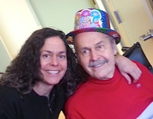

Friends,
 To people around the world, Richard Deats has long been recognized as the face of the Fellowship of Reconciliation. Richard served on FOR's national staff from 1972 to 2005, which included two terms as executive director, a long stint as director of interfaith relations, and a dozen years as editor of Fellowship magazine. To people around the world, Richard Deats has long been recognized as the face of the Fellowship of Reconciliation. Richard served on FOR's national staff from 1972 to 2005, which included two terms as executive director, a long stint as director of interfaith relations, and a dozen years as editor of Fellowship magazine.
In December 2012, Richard Deats slipped on the stairs while leaving a late-night music rehearsal in New York's Rockland County. He fell down six cement steps, hit his head on the pavement, was knocked unconscious, and suffered a traumatic brain injury.
Richard spent two weeks in a hospital ICU ward and several more weeks in rehabilitative nursing care. Since last February, he has been cared for at home by his family.
FOR is launching a fundraiser to help the Deats family with their huge medical bills.
Make a contribution today to support Richard's medical care on the occasion of his 82nd birthday, this Saturday, Feb. 8.
The need is great. Richard has been wheelchair-bound since his accident, dependent on the care of others, especially a home health-care aide who supports him six hours each day. His cognitive skills, which were deeply impacted by the brain trauma, have improved but are still subject to significant memory loss and confusion.
Richard's insurance stopped paying for physical therapy many months ago, and his family can not afford its steep costs alongside those of his health-care aide.
We, the Friends of Richard Deats, appeal for you to join us in raising $10,000 to cover the costs of three months of home health-care and physical therapy to help this peace leader who is our long-time friend and brother. We have pledged one-half of that ambitious goal; can you help us raise the rest?
Richard has given most of his life to FOR and the peace movement. As a member of the national Martin Luther King, Jr. Federal Holiday Commission, as a global nonviolence trainer in conflict zones like the Philippines (in the lead-up to the People Power revolution in 1986) and South Africa (in the apartheid era), as a peace delegation leader to the U.S.S.R. (during the Cold War), Iraq, and Iran, as a biographer of the peace movement through many books and countless articles, and in innumerable other ways, Richard's legacy of witness for nonviolent social change is distinguished and unparalleled.
Now it's our turn to give back to Richard and his family.
Please join us today with a generous donation.
Faithfully,
Friends of Richard Deats
The Rev. Patricia Ackerman, Hossein Alizadeh & Nick Tocci, Virginia Baron & Cliff Enright, Lili & Tom Baxter, Jo Becker & Jan Hesbon, Bonnie & Robert Block, Duane & Sandy Cady, Janet Chisholm, Pat Clark & Inelle Bagwell, Dorothy Cotton, Pat Coy & Karin Tanquist, the Rev. John Dear, James & Shelley Douglass, Chris & Ralph Dull, Jim & Nancy Forest, Susan Owen Glaser, John Goodwin, Doug Hostetter & Bobbie Smolow, Rev. George & Jean Houser, Mark & Mary Johnson, Rev. James & Dorothy Lawson, Ed & Ellen McManus, Stefan Merken, David McReynolds, Kathy Mills & Qambar Jaffery, Melinda Moore, Don Mosley, Sally Savage, Revs. Ken & Nancy Sehested, Rev. Kristin Stoneking & Elizabeth Campi, Ethan & Rima Vesely-Flad, Elisabeth & Dick Voigt, Anita Fee Willis, June Keener Wink |